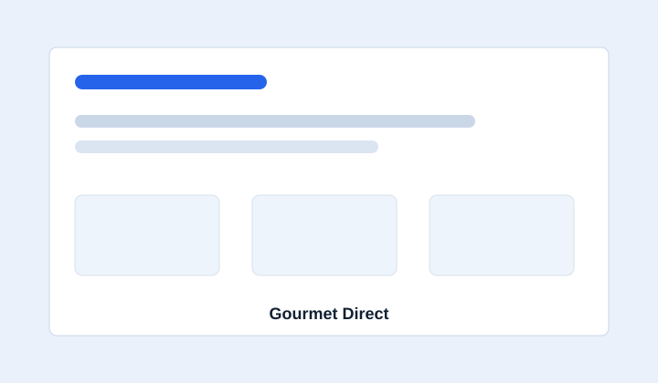
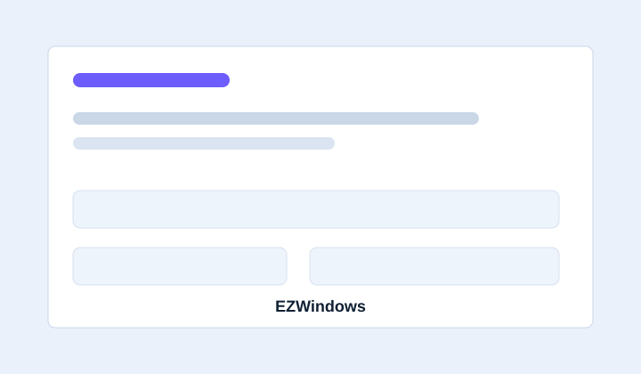
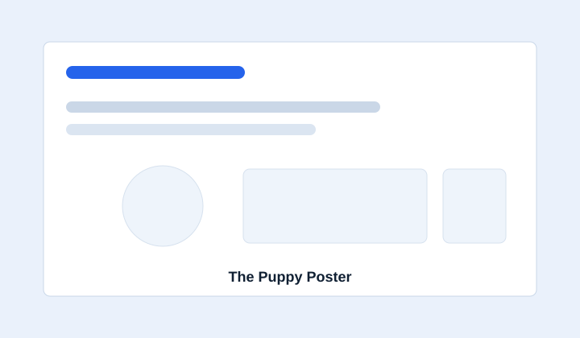

Senior PHP / WordPress / WooCommerce / Shopify Developer
Senior Web Developer Building Powerful Web & eCommerce Solutions
11+ years of experience building custom PHP, WordPress, WooCommerce and Shopify solutions, API integrations, and performance-focused web experiences — enhanced by modern AI-assisted development workflows.
11+ Years Experience
AI-Assisted Development
Punjab, India
11+Years Experience
100+Web Projects
WPWordPress & WooCommerce
AIAI-Assisted Development
About
Senior technical developer for custom web and eCommerce delivery.
Senior Web Developer with 11+ years of experience specializing in PHP, WordPress, WooCommerce, Shopify, Joomla, PrestaShop, and Laravel.
Experienced in custom theme/plugin development, eCommerce solutions, payment gateways, REST APIs, CRM and third-party integrations, Shopify Liquid customization, and performance optimization.
Strong expertise across frontend and backend development with proven experience in end-to-end project management, team coordination, and client communication.
Uses AI tools including ChatGPT and Claude for prompt engineering, planning, debugging, documentation, code review support, and faster delivery while keeping technical decisions developer-led.
Core Expertise
Practical development depth across platforms, integrations, and optimization.
WordPress Development
Custom themes, custom plugins, WooCommerce customization, business logic, and platform extensions.
Shopify Development
Shopify Liquid customization, dynamic data, theme customization, app integrations, and API integrations.
eCommerce Development
WooCommerce and Shopify solutions, product functionality, checkout, orders, pricing, payment gateways, and custom business workflows.
API & Integrations
REST APIs, CRM integrations, payment gateways, third-party APIs, webhooks, and external service integrations.
Performance & SEO
Performance optimization, Core Web Vitals, website optimization, SEO, troubleshooting, caching, and migration.
Backend Development
PHP, MySQL, Laravel, database-driven functionality, and custom application development.
AI-Assisted Development
ChatGPT and Claude workflows for prompt engineering, technical planning, debugging, documentation, and code review support.
AI-Assisted Development
Using AI tools to move faster without losing engineering judgment.
Using AI tools such as Claude and ChatGPT to accelerate development, debugging, research, documentation, problem solving, and solution design.
AI-Assisted Coding
Use Claude and ChatGPT to assist with implementation, refactoring, debugging, and code exploration.
Prompt Engineering
Create structured prompts to improve technical reasoning, code generation, debugging, documentation, and workflow automation.
Problem Solving
Use AI as a development assistant for analyzing complex requirements, troubleshooting issues, exploring approaches, and validating solutions.
Development Productivity
Use AI to accelerate repetitive development tasks while maintaining developer-led architecture, validation, testing, and code quality.
Requirements
AI-Assisted Research
Solution Design
Development
Testing & Validation
Deployment
Optimization
AI accelerates my workflow — engineering judgment remains at the center.
Featured Projects
Selected project work with real platform and integration responsibilities.

Gourmet Direct
View WebsiteWebsite: gourmetdirect.co.nz
WordPress, WooCommerce, PHP, Windcave
Developed custom WooCommerce integrations to streamline product and order management.
Key technical work
- Custom WooCommerce integrations for product and order management.
- Windcave payment gateway customization for user authorization and transaction security.

EZWindows
View WebsiteWebsite: ezwindows.com.au
WordPress, WooCommerce, PHP, JavaScript
Customized WooCommerce to support both standard orders and custom quote requests.
Key technical work
- Dynamic PDF invoice generation with business branding and customer data.
- Product customization functionality before cart submission.
- Standard order and custom quote request workflows.

Nash & Bank
View WebsiteWebsite: nashandbanks.com
Shopify, PHP, Gelato API
Developed a Shopify print-on-demand storefront and integrated the Gelato API for automated order fulfillment and shipping.
Key technical work
- Gelato API integration for automated order fulfillment and shipping.
- Custom PHP API layer for order status, notifications, and Shopify synchronization.
Experience
Career timeline focused on delivery, leadership, and technical execution.
June 2019 - Present
Senior Web Developer
Satguru Technologies
- Lead development of 100+ WordPress, WooCommerce, and Shopify projects, delivering custom themes, plugins, business logic, and eCommerce functionality for multiple client projects.
- Develop and manage complex payment gateway, REST API, CRM, third-party service, and app integrations, supporting complex business workflows.
- Build customized Shopify Liquid solutions with dynamic data and external API/app integrations.
- Work with Laravel for web application development, feature implementation, and third-party integrations.
- Independently manage projects end-to-end, from requirements analysis and estimation through development, testing, deployment, and ongoing support.
- Lead and coordinate development teams and client communication, managing requirements, task allocation, technical decisions, and project delivery.
- Resolve technical issues, migrations, performance, Core Web Vitals, SEO, and system enhancements across long-term client projects.
- Provide technical estimation, task planning, and project guidance to ensure alignment with project scope and timelines.
- Use Claude, ChatGPT, and prompt engineering workflows to support planning, debugging, documentation, and faster technical problem solving.
May 2015 - June 2019
Web Developer
Satguru Technologies
- Developed and maintained PHP-based websites and web applications using PHP, MySQL, HTML, CSS, and JavaScript.
- Customized WordPress themes, plugins, and WooCommerce functionality based on project requirements.
- Built responsive frontend interfaces and implemented backend functionality, database-driven features, and integrations.
- Worked with APIs, payment integrations, PrestaShop, and Joomla across various client projects.
- Performed testing, troubleshooting, optimization, website maintenance, and technical support for client websites.
Technical Skills
A senior toolkit for web platforms, commerce builds, and integrations.
Languages
Platforms
Frameworks
Development
Optimization
AI
Tools
11+ Years Experience
100+ Web Projects
WordPress & WooCommerce
Shopify & Liquid
API & CRM Integrations
Prompt Engineering
End-to-End Project Management
Contact
Have a project or opportunity?
Let's build something that works.